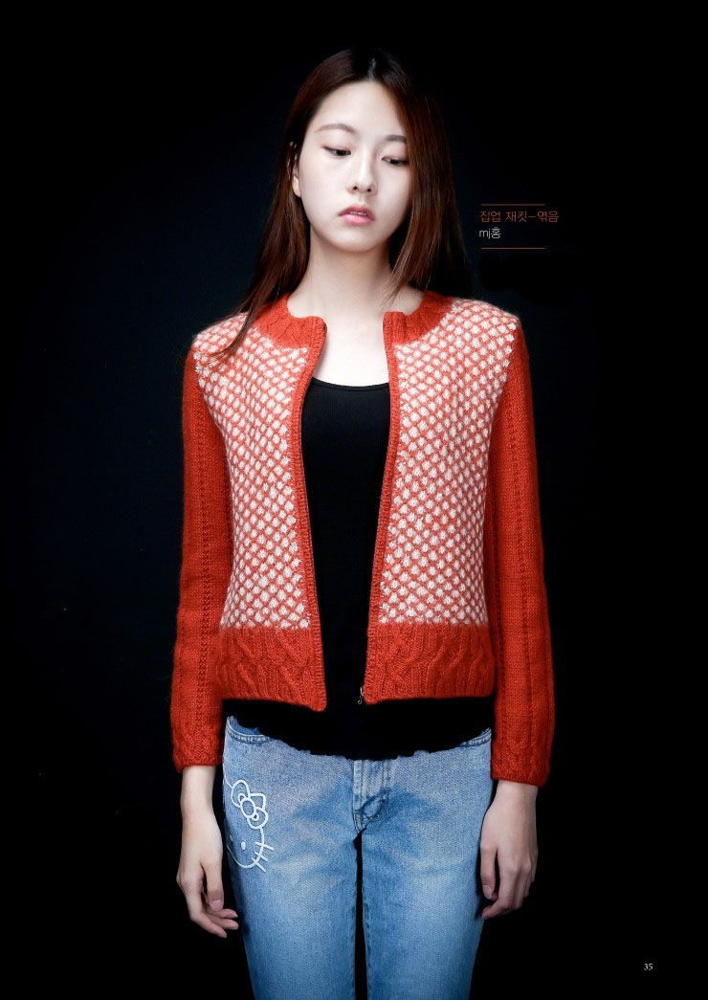

코바늘뜨기는 사슬뜨기·짧은뜨기·긴뜨기·걸어뜨기 등의 기본 방식으로 뜨개질을 한다. 바늘은 실에 실을 감아서 만들어지는 모양인 덕분에 똑같은 면적의 편물을 만들 때 대바늘보다 실이 많이 들고 완성된 편물의 두께 또한 두껍고 견고하며 신축성은 적지만, 모양을 잘 유지한다. 이러한 특성 덕분에 인테리어 소품 및 생활 용품을 만들때에는 주로 코바늘뜨기를 활용하게 된다.[출처:나무위키]  손 땀이 예쁜그녀의 손뜨개
손 땀이 예쁜
그녀의 손뜨개